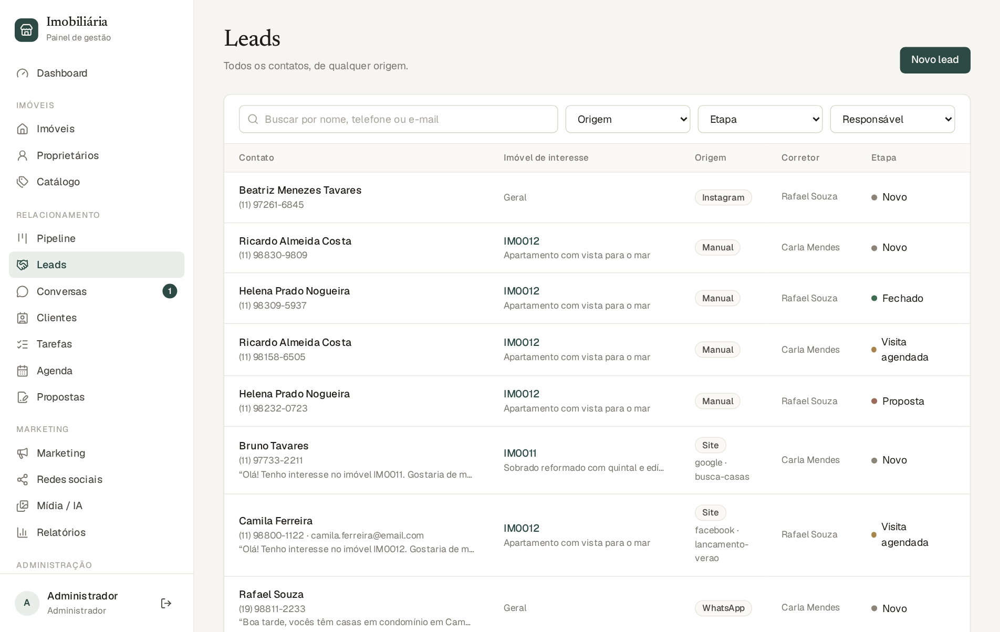
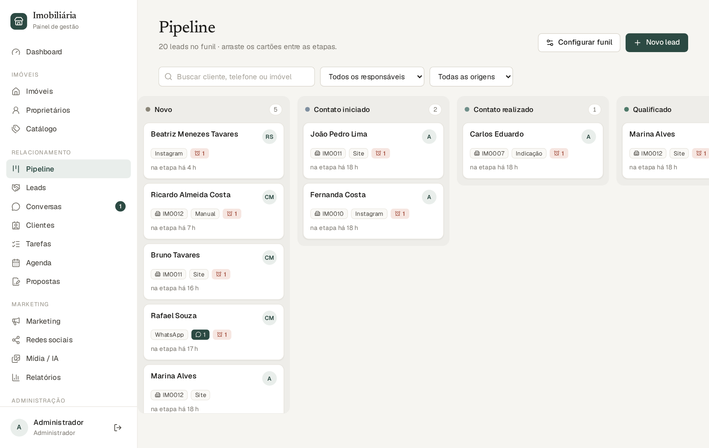
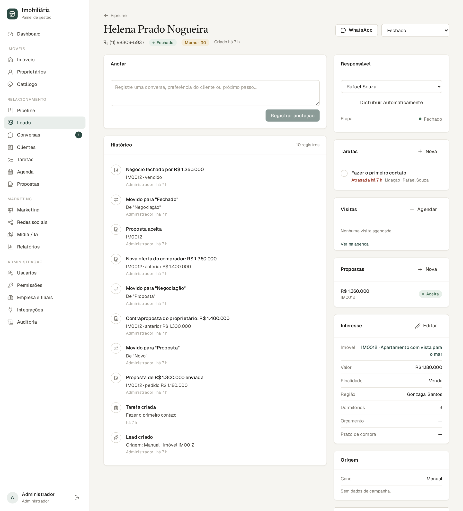
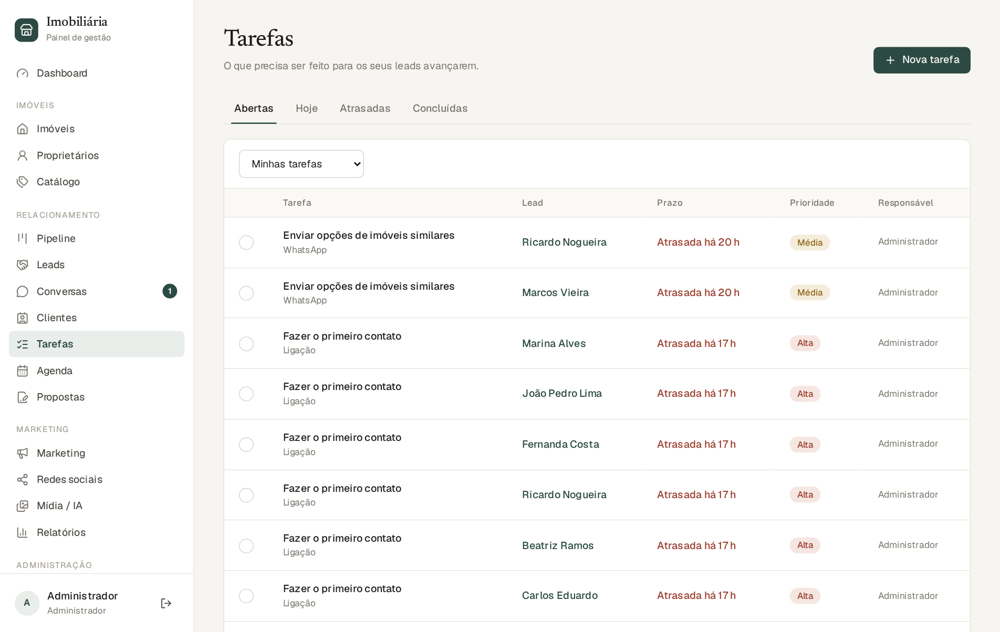
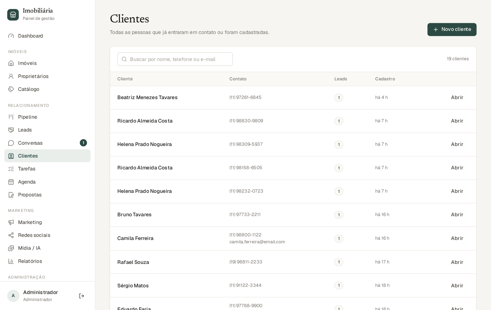
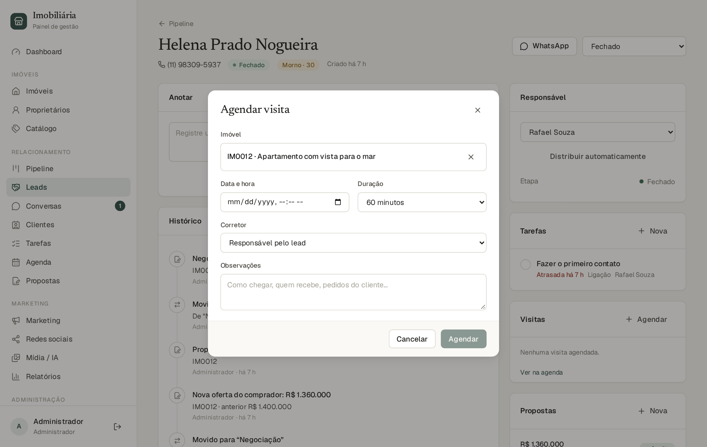
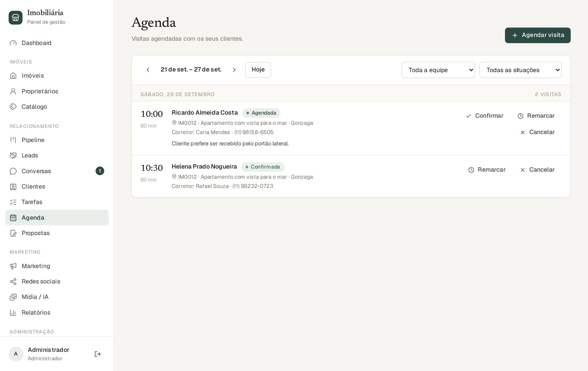
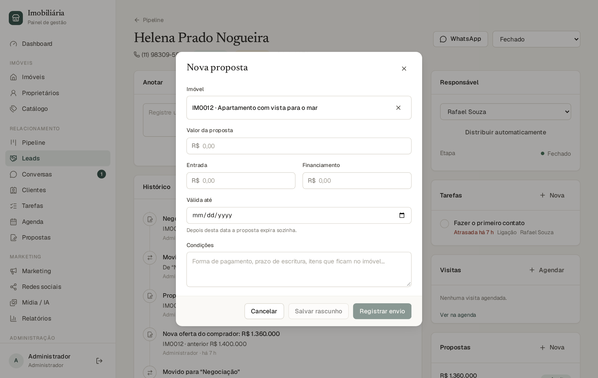
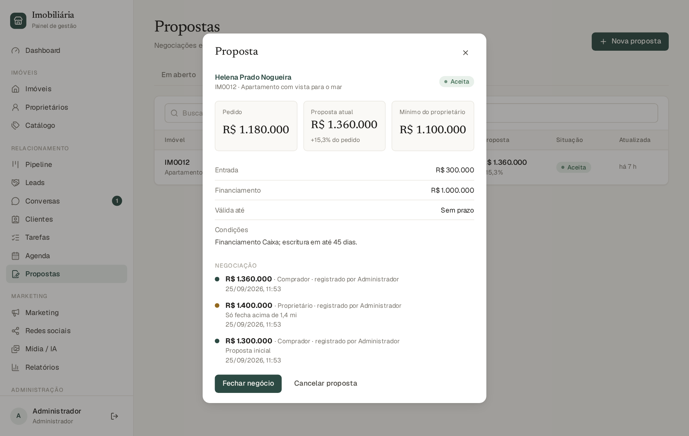
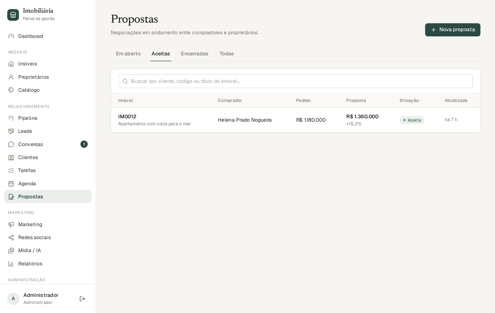

Um lead é uma pessoa interessada em comprar ou alugar. Cada lead tem um responsável, um histórico, tarefas e uma etapa no funil de vendas. Trabalhar bem os leads é o que transforma contatos em negócios.
Nenhum lead fica “sem dono”: se o imóvel tem corretor responsável, o lead vai para ele; senão, o sistema usa a regra de distribuição da empresa (manual ou rodízio, capítulo 13).

Use a busca e os filtros para achar alguém. Clique em uma linha para abrir a ficha. A coluna Score mostra a temperatura do lead (seção 7.6).
O funil é dividido em etapas. As etapas padrão são:
| Etapa | Significado |
|---|---|
| Novo | Acabou de chegar; ninguém falou ainda. |
| Contato iniciado / realizado | Já houve tentativa de contato e depois conversa de fato. |
| Qualificado | Você confirmou que a pessoa tem interesse real e condições. |
| Imóveis apresentados | Opções enviadas ao cliente. |
| Visita agendada / realizada | Movem-se sozinhas ao agendar e ao registrar a visita. |
| Proposta e Negociação | Movem-se sozinhas ao registrar a proposta e a contraproposta. |
| Fechado | Negócio feito (verde). |
| Perdido | Não vai avançar (vermelho). Exige um motivo. |


| Bloco | Para que serve |
|---|---|
| Cabeçalho | Nome, telefone (clique para ligar), e-mail, situação, temperatura (score), botão WhatsApp e seletor de etapa. |
| Anotar | Registre uma conversa, preferência do cliente ou próximo passo. Fica no histórico. |
| Histórico | Linha do tempo de tudo: criação, mudanças de etapa, anotações, tarefas, mensagens, visitas e propostas. |
| Responsável | Corretor do lead. Quem tem permissão pode trocar, ou clicar em Distribuir automaticamente (rodízio). |
| Conversa de WhatsApp | Se já conversaram, mostra a última mensagem e um botão para abrir a conversa. |
| Tarefas | Pendências do lead, com prazo (seção 7.7). |
| Visitas e Propostas | Agendar visita e registrar propostas (capítulo 8). |
| Imóveis compatíveis | Sugestões do sistema com base no que o cliente procura (seção 7.6). |
| Interesse | Imóvel de interesse, finalidade, região, dormitórios, orçamento e prazo. Preencha o quanto puder: melhora as sugestões e o score. |
| Origem | Canal e, quando existe, campanha e anúncio que trouxeram o lead. |
O sistema dá uma nota de 0 a 100 a cada lead, com regras simples e transparentes. Ela sobe automaticamente conforme o lead avança:
| Fato | Pontos |
|---|---|
| Informou orçamento | +10 |
| Respondeu no WhatsApp | +10 |
| Solicitou visita | +15 |
| Visita agendada | +20 |
| Realizou visita | +25 |
| Fez proposta | +30 |
Frio (abaixo de 30), Morno (30 a 59) e Quente (60 ou mais). Clique no selo do lead para ver o cálculo. Quando o lead esquenta, o corretor recebe uma tarefa para priorizar o contato (uma única vez).
Na ficha do lead, o bloco Imóveis compatíveis sugere imóveis disponíveis que combinam com o que o cliente procura, com uma porcentagem e os motivos (“Dentro do orçamento”, “Mesma cidade”, “3 dormitórios, como pediu”). O sistema compara orçamento, cidade, bairro, dormitórios, tipo e características e só considera o que o lead informou; outra cidade descarta o imóvel. O caminho contrário também existe: na ficha do imóvel, o bloco Leads compatíveis lista quem pode se interessar.
Tarefas são pendências com prazo ligadas a um lead: ligar, mandar WhatsApp, e-mail, visita, retorno (follow-up) ou outra. Aparecem na ficha do lead e em Relacionamento → Tarefas.

Muitas tarefas são criadas pelo sistema: primeiro contato, confirmar visita, ligar após a visita, retomar lead parado, apresentar um imóvel novo, atender cliente que pediu um humano. Elas aparecem com o mesmo formato e podem ser concluídas normalmente. Tarefas automáticas ligadas a um lead são canceladas sozinhas quando o lead é fechado ou perdido; as suas tarefas manuais permanecem.
Em Relacionamento → Clientes ficam as pessoas. Uma mesma pessoa pode ter vários leads (por exemplo, procurou um apartamento em 2025 e uma casa em 2026). O cadastro reúne nome, telefone, e-mail e o histórico. Use Novo cliente para cadastrar alguém antes de existir um lead.



Em Relacionamento → Agenda, as visitas aparecem agrupadas por dia. Use as setas para mudar de semana, Hoje para voltar, e os filtros de corretor e situação. Cada visita mostra horário, cliente, imóvel, corretor e ações:
| Situação | O que significa e o que fazer |
|---|---|
| Agendada | Marcada. Clique em Confirmar depois de falar com o cliente. |
| Confirmada | O cliente confirmou presença. |
| Realizada | Aconteceu. Clique em Realizada e registre como foi (o retorno do cliente). O lead vai para “Visita realizada” e o sistema cria a tarefa de ligar no dia seguinte. Só é possível marcar a partir do horário da visita. |
| Cliente não compareceu | Clique em Faltou. O sistema cria uma tarefa para reagendar. |
| Cancelada | Clique em Cancelar e, se quiser, informe o motivo. Cria a tarefa de oferecer novo horário. |
Para mudar o horário, use Remarcar: a confirmação anterior deixa de valer e o lembrete é refeito.
A proposta registra a oferta do comprador e as contrapropostas do proprietário, com todo o histórico.

Abra a proposta para ver o resumo, os valores (pedido, proposta atual, diferença e, para quem edita imóveis, o mínimo do proprietário), e o histórico de negociação, com cada valor, quem ofereceu e quando.

| Situação da proposta | Significado |
|---|---|
| Rascunho | Salva, mas ainda não apresentada. |
| Enviada ao proprietário | Aguardando resposta. |
| Em análise / Contraproposta | Em negociação (a cada valor novo o status se ajusta). |
| Aceita | Acordo fechado nos valores; o imóvel fica Reservado. |
| Recusada / Cancelada | Encerrada sem negócio. |
| Expirada | A validade venceu (acontece sozinho). |
